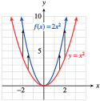

We have seen that adding a constant to the expression defining a function results in a translation of its graph. What happens if we multiply the expression by a constant? Consider the graphs of the functions
\begin{equation*}
f(x)= 2x^2 \text{, and } ~g(x)= \frac{1}{2}x^2
\end{equation*}
shown in Figure 256, and Figure 257. We will compare each to the graph of \(y = x^2\text{.}\)

\(x\)
\(y=x^2\)
\(f(x)=2x^2\)
\(-2\)
\(4\)
\(8\)
\(-1\)
\(1\)
\(2\)
\(0\)
\(0\)
\(0\)
\(1\)
\(1\)
\(2\)
\(2\)
\(4\)
\(8\)
Figure256
Compared to the graph of \(y = x^2\text{,}\) the graph of \(f (x) = 2x^2\) is expanded, or stretched, vertically by a factor of \(2\text{.}\) The \(y\)-coordinate of each point on the graph has been doubled, as you can see in the table of values, so each point on the graph of \(f\) is twice as far from the \(x\)-axis as its counterpart on the basic graph \(y = x^2\text{.}\)
\(x\)
\(y=x^2\)
\(g(x)=\frac{1}{2}x^2\)
\(-2\)
\(4\)
\(2\)
\(-1\)
\(1\)
\(\frac{1}{2}\)
\(0\)
\(0\)
\(0\)
\(1\)
\(1\)
\(\frac{1}{2}\)
\(2\)
\(4\)
\(2\)
Figure257
The graph of \(g(x) = \dfrac{1}{2}x^2\) is compressed vertically by a factor of \(2\text{;}\) each point is half as far from the \(x\)-axis as its counterpart on the graph of \(y = x^2\text{.}\)
In general, we have the following principles.
Vertical Stretches, Compressions, and Reflections
Compared with the graph of \(y = f (x)\text{,}\) the graph of \(y = a f (x)\text{,}\) where \(a \ne 0\text{,}\) is
stretched vertically by a factor of \(\abs{a}\) if \(\abs{a}\gt 1\text{,}\)
compressed vertically by a factor of \(\frac{1}{\abs{a}}\) if \(0\lt\abs{a}\lt 1\text{,}\) and
reflected about the \(x\)-axis (and stretched or compressed) if \(a\lt 0\text{.}\)
As you may have notice by now through our examples, a vertical stretch or compression will never change the \(x\) intercepts. This is a good way to tell if such a transformation has occurred.
The graph of \(g(x) = 3\sqrt[3]{x}\) is a vertical stretch of the basic graph \(y = \sqrt[3]{x}\) by a factor of \(3\text{,}\) as shown in Figure 259. Each point on the basic graph has its \(y\)-coordinate tripled.
Figure259
The graph of \(h(x) = \dfrac{-1}{2}\abs{x}\) is a vertical compression of the basic graph \(y = \abs{x}\) by a factor of \(2\text{,}\) combined with a reflection about the \(x\)-axis. You may find it helpful to graph the function in two steps, as shown in Figure 260.
How is the graph of \(f\) different from the graph of \(y =\abs{x}\text{?}\)
Example262
The function \(A = f (t)\) graphed in Figure 263 gives a person's blood alcohol level \(t\) hours after drinking a martini. Sketch a graph of \(g(t) = 2 f (t)\) and explain what it tells you.
To sketch a graph of \(g\text{,}\) we stretch the graph of \(f\) vertically by a factor of \(2\text{,}\) as shown in Figure 264. At each time \(t\text{,}\) the person’s blood alcohol level is twice the value given by \(f\text{.}\) The function \(g\) could represent a person's blood alcohol level \(t\) hours after drinking two martinis.
If the Earth were not tilted on its axis, there would be 12 daylight hours every day all over the planet. But in fact, the length of a day in a particular location depends on the latitude and the time of year.
The graph in Figure 266 shows \(H = f (t)\text{,}\) the length of a day in Helsinki, Finland, \(t\) days after January 1, and \(R = g(t)\text{,}\) the length of a day in Rome. Each is expressed as the number of hours greater or less than 12. Write a formula for \(f\) in terms of \(g\text{.}\) What does this formula tell you?
Figure266
Figure267Explore the properties of vertical stretches and compressions discussed in this section with this applet. You can change the base function \(f(x)\) using the input box and see many different stretches/compressions of \(f(x)\) by moving around the \(a\) slider.